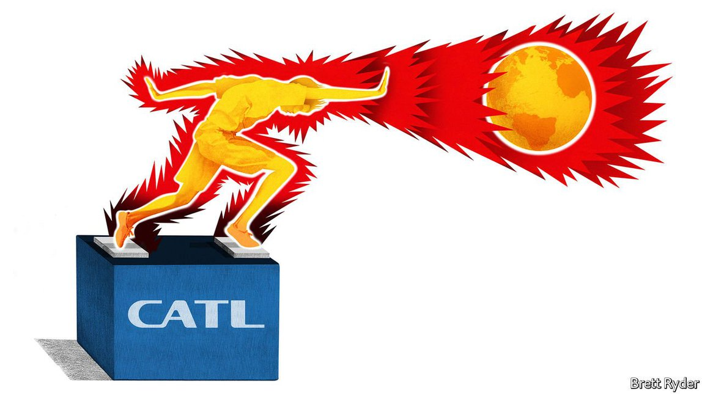

2021-07-28T14:38:12+00:00
熊彼特
中国“梦之子”悄然领跑电池竞赛
难关在后头：地缘政治
在美国，要想在某个行业称霸，你需要启动自己内在的伊隆·马斯克，并让它咆哮。但为马斯克的一些特斯拉电动汽车供应电池的中国公司宁德时代却不一样。当笔者在2017年第一次跟这家公司联系采访时，对方干脆地拒绝了。“我们只想专心做产品，目前不接受任何采访。”到如今，它的态度也只是稍微柔和了那么一丁点。“很遗憾，目前恕难安排（采访）。”真是让人恨不得以牙还牙，再不理睬它。
然而在2017年，创立仅六年的宁德时代从世界第三大电池制造商一举跃升头名。公司市值不断攀升，至目前已达到1.3万亿元（2000亿美元），超过了分列第二、第三和第四名的电池制造商韩国LG化学、日本松下和中国比亚迪的总和。近日，随着它的股价不断上涨，53岁的创始人曾毓群的身家已经超过了名气大得多的中国科技大亨马云。马云已被中国政府打压，这样看来，曾毓群一直保持低调实属精明。
未来，世界听闻宁德时代消息的频率会大大增加。其原因也正是它获得高估值的一个根据：它即将走出中国大陆这个世界最大的电动汽车市场（它贡献了那里锂离子电池销量的一半左右），进军欧洲、印尼，甚至可能还有美国。它的盈利能力远超全球同行，技术水平也已经至少不输它们，这使它有能力在竞争中胜过对手，并为全球清洁能源革命做出可观的贡献。然而，正如电池咨询公司Cairn ERA的山姆·贾菲（Sam Jaffe）所言，宁德时代也是中国的政府产业政策造就的“梦之子”。这令它成为了紧张的科技地缘政治局势中一个潜在的引火点。
宁德时代的出身就很低调。曾毓群在福建的山村里长大，在落后的亚热带城市宁德创建了公司，那里更出名的是茶叶而不是科技。但他一直满怀抱负。1999年，他创立了新能源科技有限公司（ATL），为便携式设备生产锂离子电池，并在2005年把公司卖给了日本TDK。当时他的大客户之一便是iPhone的制造商苹果。
中国积极推进将动力电池打造成战略产业，曾毓群看到了其中的潜力，在2011年牵头将该业务从ATL剥离出来，切断了与日本母公司的联系——此举可能是为了取悦中国政府，电池行业高管、曾经作为投资分析师跟踪该公司的马克·纽曼（Mark Newman）说。宁德时代在2018年上市时，政府也有一小部分直接和间接持股。更重要的是，政府是它的后盾。多年来，中国用补贴支持国产的电动汽车和大巴用电池，令LG化学和三星SDI等韩国竞争对手举步维艰。作为中国两家顶级动力电池制造商之一，宁德时代受益最大。另一家公司比亚迪既生产电池也生产汽车，所以许多在中国的竞争车企——包括特斯拉和宝马等外国车厂——对它绕行，转而向曾毓群采购电池。
然而，将宁德时代的成功完全归因于经济民族主义是不公平的。咨询公司彭博新能源财经（BloombergNEF）的詹姆斯·弗里斯（James Frith）表示，在2019年面临补贴退坡时，宁德时代迅速抢在韩国竞争对手之前推出了最新的高镍电池，比中国当时主流的更便宜的磷酸铁锂电池续航更长。他补充说，中国汽车制造商在采用创新化学工艺方面比西方同行（特斯拉除外）更大胆，这给了宁德时代更多试验的空间。与竞争对手在其他市场的投资收益相比，宁德时代在中国的投资收益也更高，同时还享有更廉价的劳动力，因此其经营利润率接近15%，为业内最高。强劲的利润为扩张提供了更多资金。投资公司盛博的尼尔·贝弗里奇（Neil Beveridge）预计，到2025年宁德时代的电池产能将大约翻两番，达到500吉瓦时。这相当于当今世界上所有电池超级工厂预期产能的总和。唯有马斯克设定了更非同寻常的目标。
曾毓群和市占率维持艺术
宁德时代大部分扩产将放在中国，它在那里有不断增长的出口业务。但预计到今年年底，它设在德国埃尔福特（Erfurt）产能为14吉瓦时的第一家海外工厂也将投产，为宝马、大众和戴姆勒等汽车制造商供货。在电动汽车销售在中国以外地区提速之际，它出征海外似乎是为了保持自己的市场领先地位。它的日韩竞争对手目前拥有更大的全球业务。电池行业顾问西蒙·摩尔斯（Simon Moores）认为，下一步是打进美国。
不过，能源这门生意——即使是清洁能源——水不清，被地缘政治对抗和经济沙文主义搅混。西方国家已经开始担心宁德时代会凭借在中国的盈利能力向海外输出廉价产品，重新揭开2010年代中国受补贴的太阳能面板席卷全球时留下的伤疤。此外，和半导体一样，先进电池也日益被当作一场军备竞赛。欧洲和美国正在大力资助本土制造电池和配套供应链追赶中国。太过依赖某家中国供应商在它们看来是个战略软肋。
因此，宁德时代得机灵些。它与全球汽车制造商的结盟已经多过任何其他电池公司；在全球各地贴近这些汽车制造商业务的地方联合建厂可为它赢得政治支持。它还需要强调用于电动汽车和清洁电网的廉价电池在对抗气候变化中的重要性，以此应对地缘政治中的偏执多疑。提高透明度肯定是没错了。毕竟讳莫如深一不小心就好像是有所隐瞒。
2021-07-28T14:38:12+00:00
Schumpeter
China’s “dreamchild” is stealthily winning the battery race
Now comes the hard bit: geopolitics
IN AMERICA, IF you want to dominate an industry, you channel your inner Elon Musk and shout about it. But CATL, the Chinese company that makes batteries for some of Mr Musk’s Tesla electric vehicles (EVs), is different. When your columnist first contacted it in 2017, the brush-off was swift. “We want to concentrate on our products only and do not accept any interviews at present.” These days it is only marginally less blunt. “Unfortunately, we are sorry that it’s hard for us to arrange [interviews] at the moment.” The temptation is to give it a dose of its own medicine and ignore it.
And yet in 2017 the firm, founded only six years earlier as Contemporary Amperex Technology Ltd, vaulted from being the world’s third-largest battery-maker to its biggest. It has since reached a market value of 1.3trn yuan ($200bn), more than the second, third and fourth producers—South Korea’s LG Chem, Japan’s Panasonic, and China’s BYD—combined. In recent days its rising share price has made its 53-year-old founder, Zeng Yuqun, richer than Jack Ma, a much-better-known Chinese tech baron. Given Mr Ma’s blackballing by the Chinese government, for Mr Zeng to have kept his head down now looks shrewd.
The world will hear a lot more about CATL in the future. That is because one of the justifications for its high valuation is that it is about to move beyond the Chinese mainland, the world’s biggest EV market where it accounts for about half of lithium-ion-battery sales, to Europe, Indonesia and possibly even America. Its profitability far exceeds that of its global peers. Its technology has become at least as good as theirs, giving it the clout to outcompete them and contribute meaningfully to a worldwide clean-energy revolution. And yet it is also what Sam Jaffe of Cairn ERA, a battery consultancy, calls the “dreamchild” of China’s government-industrial complex. That makes it a potential flashpoint in the torrid world of technology geopolitics.
CATL’s low profile starts with its provenance. Mr Zeng created it in the backwater of Ningde, a subtropical city better known for tea than tech, in Fujian province where he grew up in a hillside village. But he has long had high ambitions. In 1999 he founded Amperex Technology Ltd (ATL), a maker of lithium-ion batteries for portable devices, which he sold to TDK, a Japanese firm, in 2005. One of his big clients was Apple, maker of the iPhone.
Seeing the potential for EV batteries, which China was keen to turn into a strategic industry, Mr Zeng led a spin off from ATL in 2011, severing links with its Japanese parent company—possibly to please the Chinese authorities, says Mark Newman, a battery executive who formerly covered the company as an investment analyst. When it listed in 2018, CATL had a small percentage of direct and indirect state ownership. More important, the government had its back. For years China used subsidies to favour domestically produced batteries for electric cars and buses, kneecapping South Korean competitors such as LG Chem and Samsung SDI. CATL, one of two top-tier Chinese producers, benefited most. The other, BYD, made cars as well as batteries. For that reason, many rival carmakers in China—including foreigners such as Tesla and BMW—gave it a wide berth and turned to Mr Zeng instead.
It is unfair, however, to ascribe CATL’s success purely to economic nationalism. According to James Frith of BloombergNEF, a consultancy, when CATL was faced with the winding down of subsidies in 2019, it quickly leapfrogged its South Korean rivals to produce the latest high-nickel batteries, which run for longer than the cheaper lithium-iron-phosphate ones that had been China’s staple. Chinese carmakers are bolder than their Western counterparts (apart from Tesla) in adopting innovative chemistry, he adds, which gives CATL more freedom to experiment. It also gets more for its investment in China than rivals do elsewhere and has a cheaper workforce, which makes its operating margins, just shy of 15%, the best in the business. Strong profits provide more cash to invest in expansion. Neil Beveridge of Bernstein, an investment firm, expects its capacity roughly to quadruple to 500 gigawatt-hours (GWh) of battery cells a year by 2025. That is an amount similar to what is promised from all of the world’s gigafactories today. Only Mr Musk sets more outlandish targets.
Zeng and the art of market-share maintenance
Most of CATL’s expansion will come in China, where it has a growing export business. But by the end of this year it is also expected to start production at its first offshore factory, with capacity of 14GWh in Erfurt, Germany, from where it will supply carmakers like BMW, Volkswagen and Daimler. Its move overseas appears to be motivated by a desire to retain its market leadership as EV sales outside China accelerate. Its South Korean and Japanese rivals have a bigger global presence. Simon Moores, a battery consultant, thinks a subsequent step will be into America.
Yet energy—even the clean stuff—is dirty business, muddied by geopolitical rivalries and economic jingoism. There are already fears in the West that CATL’s profitability in China will enable it to offer cut-price products abroad, reopening wounds caused when China’s subsidised solar panels swept the world in the 2010s. Moreover, advanced batteries, like semiconductors, are increasingly discussed in terms of an arms race. Europe and America are offering big inducements for locally made batteries and adjacent supply chains in order to catch up with China. They see a strategic vulnerability in being too reliant on a Chinese supplier.
As a result, CATL will have to be clever. Already it has more alliances with global carmakers than any other battery firm; jointly building factories close to their operations around the world would buy it political support. It will need to counter geopolitical paranoia by stressing the importance of cheap batteries, both for EVs and clean-electricity grids, in the fight against climate change. More transparency wouldn’t go amiss, either. It is a fine line between being coy and acting as if it has something to hide. ■
2021-07-28T14:38:12+00:00
熊彼特
中國“夢之子”悄然領跑電池競賽
難關在後頭：地緣政治
在美國，要想在某個行業稱霸，你需要啟動自己內在的伊隆·馬斯克，並讓它咆哮。但為馬斯克的一些特斯拉電動汽車供應電池的中國公司寧德時代卻不一樣。當筆者在2017年第一次跟這家公司聯繫採訪時，對方乾脆地拒絕了。“我們只想專心做產品，目前不接受任何採訪。”到如今，它的態度也只是稍微柔和了那麼一丁點。“很遺憾，目前恕難安排（採訪）。”真是讓人恨不得以牙還牙，再不理睬它。
然而在2017年，創立僅六年的寧德時代從世界第三大電池製造商一舉躍升頭名。公司市值不斷攀升，至目前已達到1.3萬億元（2000億美元），超過了分列第二、第三和第四名的電池製造商韓國LG化學、日本松下和中國比亞迪的總和。近日，隨着它的股價不斷上漲，53歲的創始人曾毓群的身家已經超過了名氣大得多的中國科技大亨馬雲。馬雲已被中國政府打壓，這樣看來，曾毓群一直保持低調實屬精明。
未來，世界聽聞寧德時代消息的頻率會大大增加。其原因也正是它獲得高估值的一個根據：它即將走出中國大陸這個世界最大的電動汽車市場（它貢獻了那裡鋰離子電池銷量的一半左右），進軍歐洲、印尼，甚至可能還有美國。它的盈利能力遠超全球同行，技術水平也已經至少不輸它們，這使它有能力在競爭中勝過對手，並為全球清潔能源革命做出可觀的貢獻。然而，正如電池諮詢公司Cairn ERA的山姆·賈菲（Sam Jaffe）所言，寧德時代也是中國的政府產業政策造就的“夢之子”。這令它成為了緊張的科技地緣政治局勢中一個潛在的引火點。
寧德時代的出身就很低調。曾毓群在福建的山村里長大，在落後的亞熱帶城市寧德創建了公司，那裡更出名的是茶葉而不是科技。但他一直滿懷抱負。1999年，他創立了新能源科技有限公司（ATL），為便攜式設備生產鋰離子電池，並在2005年把公司賣給了日本TDK。當時他的大客戶之一便是iPhone的製造商蘋果。
中國積極推進將動力電池打造成戰略產業，曾毓群看到了其中的潛力，在2011年牽頭將該業務從ATL剝離出來，切斷了與日本母公司的聯繫——此舉可能是為了取悅中國政府，電池行業高管、曾經作為投資分析師跟蹤該公司的馬克·紐曼（Mark Newman）說。寧德時代在2018年上市時，政府也有一小部分直接和間接持股。更重要的是，政府是它的後盾。多年來，中國用補貼支持國產的電動汽車和大巴用電池，令LG化學和三星SDI等韓國競爭對手舉步維艱。作為中國兩家頂級動力電池製造商之一，寧德時代受益最大。另一家公司比亞迪既生產電池也生產汽車，所以許多在中國的競爭車企——包括特斯拉和寶馬等外國車廠——對它繞行，轉而向曾毓群採購電池。
然而，將寧德時代的成功完全歸因於經濟民族主義是不公平的。諮詢公司彭博新能源財經（BloombergNEF）的詹姆斯·弗里斯（James Frith）表示，在2019年面臨補貼退坡時，寧德時代迅速搶在韓國競爭對手之前推出了最新的高鎳電池，比中國當時主流的更便宜的磷酸鐵鋰電池續航更長。他補充說，中國汽車製造商在採用創新化學工藝方面比西方同行（特斯拉除外）更大膽，這給了寧德時代更多試驗的空間。與競爭對手在其他市場的投資收益相比，寧德時代在中國的投資收益也更高，同時還享有更廉價的勞動力，因此其經營利潤率接近15%，為業內最高。強勁的利潤為擴張提供了更多資金。投資公司盛博的尼爾·貝弗里奇（Neil Beveridge）預計，到2025年寧德時代的電池產能將大約翻兩番，達到500吉瓦時。這相當於當今世界上所有電池超級工廠預期產能的總和。唯有馬斯克設定了更非同尋常的目標。
曾毓群和市佔率維持藝術
寧德時代大部分擴產將放在中國，它在那裡有不斷增長的出口業務。但預計到今年年底，它設在德國埃爾福特（Erfurt）產能為14吉瓦時的第一家海外工廠也將投產，為寶馬、大眾和戴姆勒等汽車製造商供貨。在電動汽車銷售在中國以外地區提速之際，它出征海外似乎是為了保持自己的市場領先地位。它的日韓競爭對手目前擁有更大的全球業務。電池行業顧問西蒙·摩爾斯（Simon Moores）認為，下一步是打進美國。
不過，能源這門生意——即使是清潔能源——水不清，被地緣政治對抗和經濟沙文主義攪混。西方國家已經開始擔心寧德時代會憑藉在中國的盈利能力向海外輸出廉價產品，重新揭開2010年代中國受補貼的太陽能面板席捲全球時留下的傷疤。此外，和半導體一樣，先進電池也日益被當作一場軍備競賽。歐洲和美國正在大力資助本土製造電池和配套供應鏈追趕中國。太過依賴某家中國供應商在它們看來是個戰略軟肋。
因此，寧德時代得機靈些。它與全球汽車製造商的結盟已經多過任何其他電池公司；在全球各地貼近這些汽車製造商業務的地方聯合建廠可為它贏得政治支持。它還需要強調用於電動汽車和清潔電網的廉價電池在對抗氣候變化中的重要性，以此應對地緣政治中的偏執多疑。提高透明度肯定是沒錯了。畢竟諱莫如深一不小心就好像是有所隱瞞。